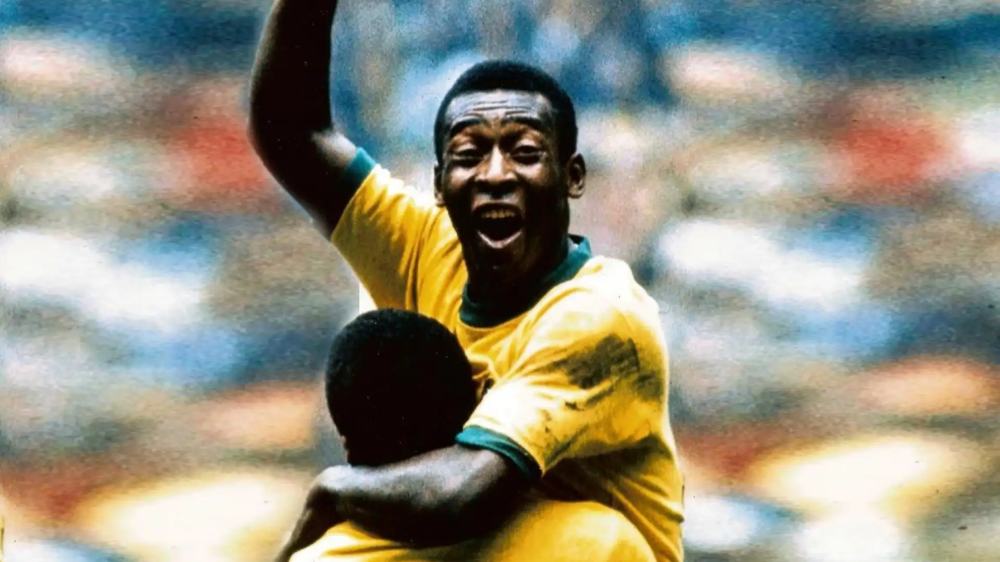
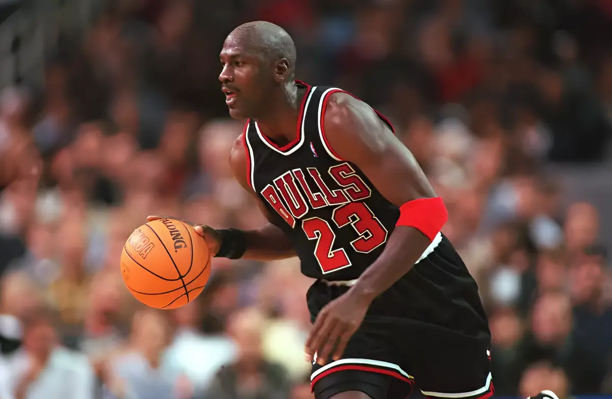
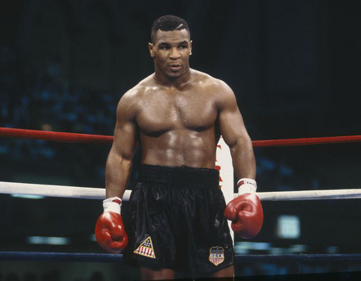
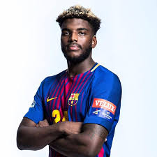

Pelé
Edson Arantes do Nascimento (Três Corações, 23 de outubro de 1940 São Paulo, 29 de dezembro de 2022), mais conhecido como Pelé, foi um futebolista brasileiro que atuou como atacante. Descrito como o "Rei do Futebol", é amplamente considerado como o maior atleta de todos os tempos.

Michael Jordan
Michael Jeffrey Jordan é um empresário e ex-basquetebolista estadunidense que atuava como ala-armador. Considerado por muitos como o melhor jogador de basquete de todos os tempos, é considerado também como um dos mais importantes desportistas masculinos da história.

Mike Tyson
Michael Gerard Tyson é um ator e ex-boxeador profissional estadunidense, ativo entre 1985–2005 e em 2024. É considerado um dos maiores boxeadores peso-pesado de todos os tempos.

Dika Mem
Dika Mem (Paris, 31 de agosto de 1997) é um handebolista profissional francês, campeão olímpico.Mem conquistou a medalha de ouro com a Seleção Francesa de Handebol Masculino nos Jogos Olímpicos de Verão de 2020 em Tóquio, após derrotar a equipe dinamarquesa na final da competição por 25–23.
